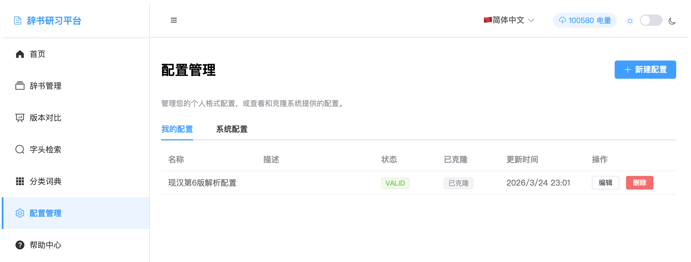

Configuration management allows you to create and manage dictionary parsing rules. Through custom configurations, you can improve the accuracy and efficiency of dictionary file parsing. The system provides flexible configuration templates and a powerful rule editor.

Configuration management list interface
The configuration management interface displays all available parsing configurations, including system built-in configurations and user custom configurations.
Create parsing rules suitable for specific dictionary formats
Provide configuration templates for common dictionary formats
Test parsing effects of configuration rules instantly
Display parsing success rate and error statistics
Standard configurations provided by the platform, suitable for common dictionary formats
Personalized configurations created according to specific needs
Create variants based on existing configurations to quickly adapt to similar formats
You can choose to create from template, clone existing configuration, or create completely custom configuration.
Fill in configuration name, description, and other basic information for subsequent management and identification.
Use the rule editor to set recognition and extraction rules for various fields.
Use test text to verify the parsing effect of configuration rules.
After confirming the configuration is correct, save it. It can then be used during dictionary upload.
The rule editor provides powerful regular expression editing and testing functions:
Regular expression syntax highlighting display for easy writing and debugging
Input test text to view matching results in real-time
Provides common regular expression templates and examples
Provides syntax hints and error checking functions
Check correctness of regular expression syntax
Validate logical relationships and compatibility between rules
Test parsing effects using sample data
Provide detailed error information and modification suggestions
Prioritize using system-provided configuration templates and adjust based on them to save development time.
Use various types of test text to validate configuration, ensuring rule universality and accuracy.
Important configurations are recommended to have version backups for easy rollback and comparison of different version effects.
Add detailed descriptions and usage instructions for configurations for team members to understand and use.